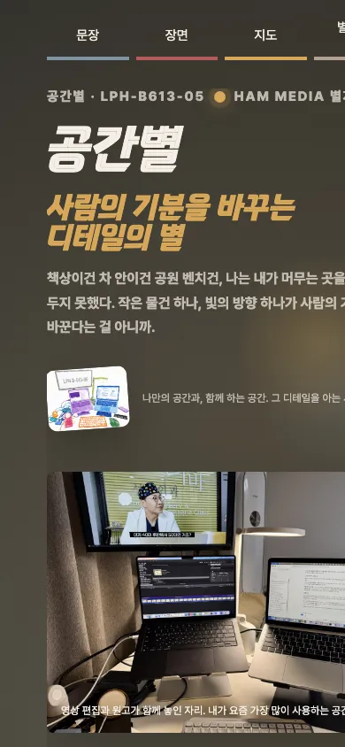
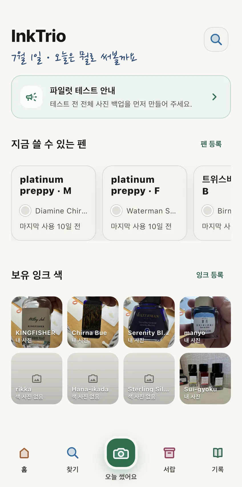
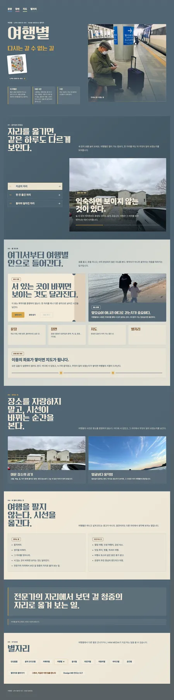
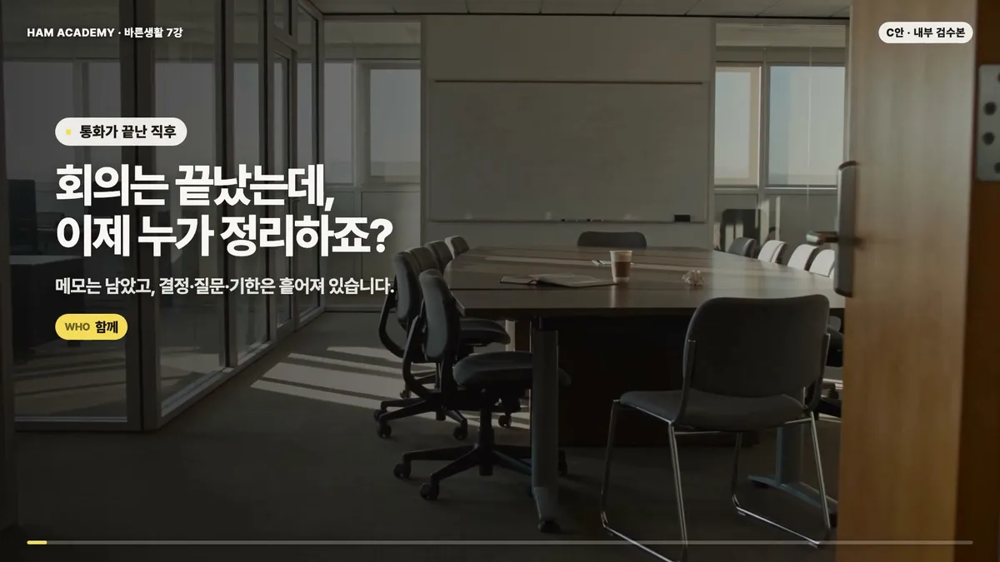
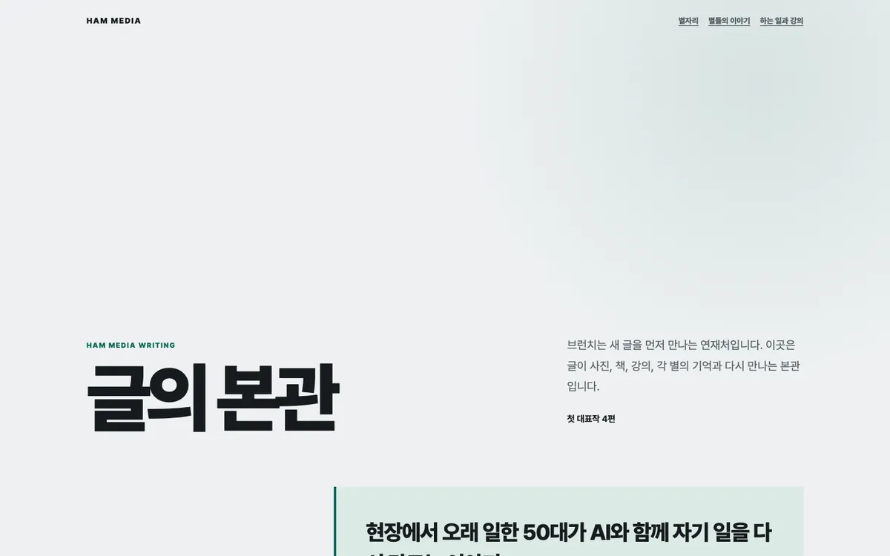
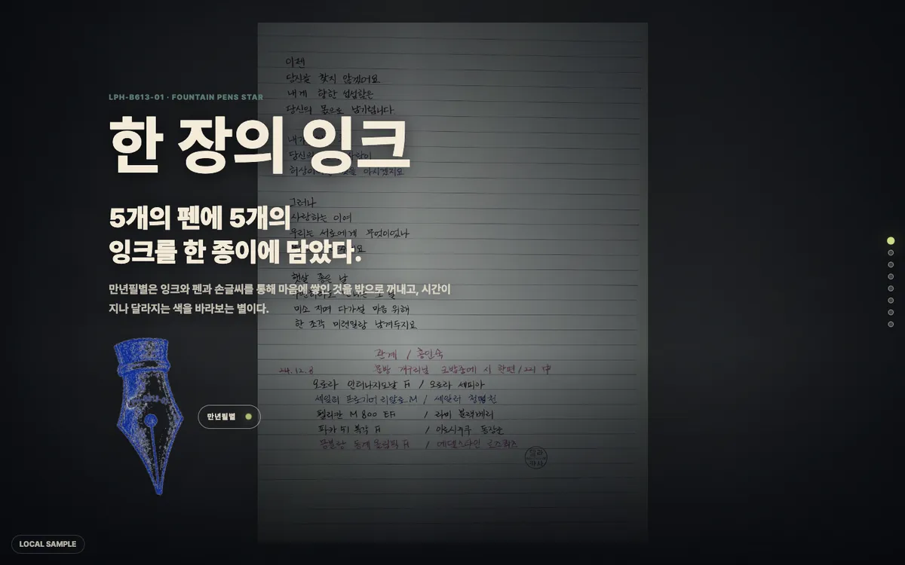

왜 이 일을 하는가
기능보다 목표와 상대를 먼저 정합니다.
예: “손님 응대에 자신 있다”가 아니라 “망설이는 손님이 메뉴판 어디서 멈추는지 봤던 날”을 먼저 말합니다.오래 자기 일을 해온 자영업자·비개발자 대표·관리자 중, AI 앞에서 결과를 끝내지 못한 분께
내 경험을 말하고, AI의 첫 결과를 내가 고치고, 처음 보는 사람이 쓸 수 있는지 확인해 한 페이지를 끝내는 일곱 시간입니다. 몇 번을 물어봐도 AI는 화내지 않습니다 — 어렵게 만들지 않습니다.
1~7강이 무료로 열려 있습니다. 신청도 결제도 없이 바로 들어가 직접 해 보실 수 있습니다. 1~4강은 휴대폰으로 시작하고, 5~6강은 파일을 열 컴퓨터를 준비하세요. 마지막에는 처음 보는 한 사람의 반응으로 마무리합니다.
먼저 영상으로
HAM MEDIA 유튜브 「99일째」 영상입니다. 재생 버튼을 누르기 전에는 유튜브로 어떤 정보도 보내지 않습니다.
유튜브에서 보기 →실제로 이렇게 배웁니다
이 수업을 다시 만들 때 실제로 오간 장면입니다. 요청, 부족했던 첫 결과, 햄PD가 짚은 말, 바뀐 결과 순서로 눌러 보세요. 당시 AI가 쓴 첫 답의 원문은 남아 있지 않아, 그때 나온 결과물로 보여 드립니다.
「내가 너네에게 했던 말들이 강의에 쓰이면 될꺼 같아」
계속 내놓지 못한 강의의 원인을 찾다가, 자기가 실제로 결과를 만든 방법을 강의의 중심에 두자고 한 말입니다.이 수업을 다시 만들 때 오간 실제 장면
햄PD는 코딩을 배운 뒤 결과를 만든 사람이 아닙니다. 오래 해온 일을 자기 말로 설명했고, AI의 결과가 생각과 다를 때마다 다시 말했습니다.
말이 아니라 확인 가능한 것
모두 실제 공개 결과이거나 회사 작업 기록입니다. 가장 먼저 보이는 마포바다는 HAM MEDIA가 만들어 운영하는 실제 고객 홈페이지입니다. 견본 이미지를 꾸며 만든 가짜 화면이 아닙니다.
 실제 고객 작업마포바다 홈페이지 — 메뉴를 보고 찾아오는 길까지소개·메뉴·사진·영상·오시는 길을 한 페이지에 · 만든 범위 보기
실제 고객 작업마포바다 홈페이지 — 메뉴를 보고 찾아오는 길까지소개·메뉴·사진·영상·오시는 길을 한 페이지에 · 만든 범위 보기

홈페이지한 공간의 경험을 이야기와 증거로실제 페이지 열기
앱잉크 기록을 다시 찾는 InkTrio실제 페이지 열기
사진과 글사진 한 장을 움직이는 기억으로실제 페이지 열기
영상통화 메모가 제출 자료가 되는 48초48초 영상 보기 · 실제 사례를 가려 다시 만든 수업용 재구성
글과 포트폴리오경험을 읽히는 구조로 편집포트폴리오 열기
제작 체계효과를 다 넣지 않고 목적에 맞게 선택디자인 도구 열기하루 한 시간, 같은 일 하나
매시간 새 도구를 구경하지 않습니다. 첫 시간에 꺼낸 내 일을 마지막 시간까지 계속 씁니다.
일곱 시간 뒤에는 초안이 아니라, 자기 기기에서 열고 처음 보는 사람의 반응으로 고친 첫 최종본 한 개가 남습니다.
바른생활 수업법
기능보다 목표와 상대를 먼저 정합니다.
예: “손님 응대에 자신 있다”가 아니라 “망설이는 손님이 메뉴판 어디서 멈추는지 봤던 날”을 먼저 말합니다.자료, 완료 기준, 하지 말 것을 함께 건넵니다.
예쁜지보다 상대가 이해하고 쓸 수 있는지 봅니다.
결과와 근거, 남은 일을 한곳에 기록합니다.
잘 맞는 사람
프롬프트 묶음만 받기, 한 번에 자동화하기, 검수 없이 AI 결과를 그대로 쓰기.
가르치는 사람
방송, 매장, 글, 사진, 영상, 앱과 홈페이지에서 실제 일을 AI와 이어 왔습니다. 바른생활은 그 결과만 보여주는 수업이 아니라, 처음 틀린 결과를 사람이 어떻게 바로잡는지 함께 보는 수업입니다.
실제 작업 범위 확인하기AI 사용률과 기업 사례는 수업의 주인공이 아닙니다. 왜 ‘도구 사용’과 ‘업무 결과’가 다른지 확인하는 참고 근거로만 둡니다.
한국은행 생성형 AI 업무 사용 조사 PwC AI Performance Study 2026 이선 몰릭 교수 원문 — On the necessity of a sin 안드레이 카파시 원문 — vibe coding 최초 게시글현재 상태
1~7강이 무료입니다. 신청·결제 없이 브라우저에서 바로 시작합니다. 1강에서 내 고민을 AI와 이야기하고, 2강에서 누구를 도울 한 장인지 정합니다. 3~4강에서는 같은 초안을 내 사실과 판단으로 다듬고, 5~6강에서는 실제로 열리는 한 페이지를 만들어 직접 확인합니다. 7강은 처음 보는 한 사람에게 보여 준 반응과 다음에 이어갈 말을 남깁니다. 1~4강은 휴대폰으로 시작할 수 있고, 5~6강은 파일을 열 컴퓨터를 준비하세요. 교실 메모는 본인 기기에만 저장됩니다. 실습에 쓰는 AI에는 내가 직접 보낸 내용만 전달됩니다.
결과의 완성도는 선택한 일의 난이도, 준비한 자료, 참여 정도에 따라 달라집니다. 이 과정은 매출·완전 자동화·장기 행동 변화를 보장하지 않습니다.
HAM MEDIA가 독립적으로 설계·운영하는 교육이며, Anthropic 또는 OpenAI의 공식·제휴·인증 과정이 아닙니다.
당신이 살아온 시간은, 아직 쓸모 있습니다. 오늘 한 가지부터 꺼내 보세요.